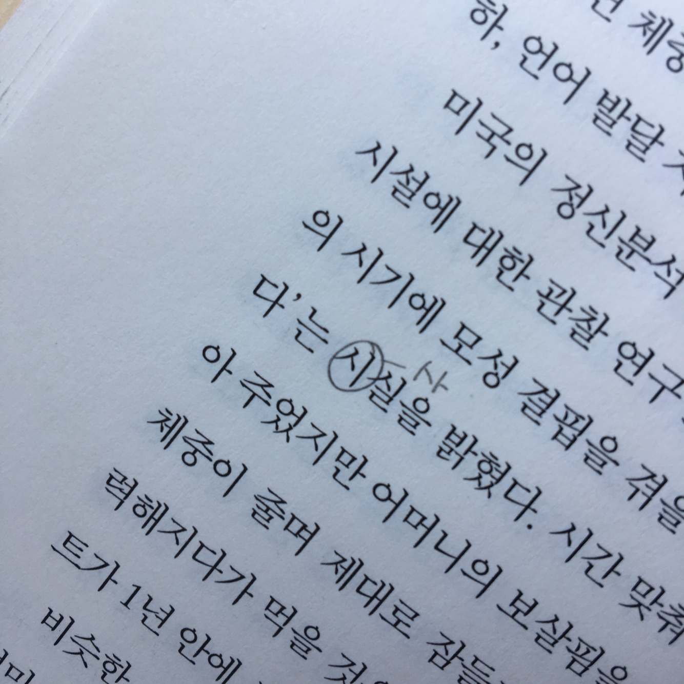

- 좋은이별
- 채식주의자
- 붉은손가락
소중한 것을 잃거나 깊은 상실을 경험하면 우리는 조용한 곳, 아무도 방해하지 않는 곳으로 찾아가 혼자 머물고 싶어 한다. 그런 장소에서 무슨 일을 하려는 게 아니라 아무 일도 하지 않기 위해 그렇게 한다. 죽음처럼 멈춰 정지하기 위해, 상실처럼 텅 비우기 위해 그런 곳을 찾아간다.
세상이 추악하고 배신과 음모가 횡행하는 곳이라 느껴진다면, 바로 그러한 세상에 맞추어 살아갈 지혜와 힘이 필요하다는 사실을 깊이 새긴다.
생의 소중함과 함께, 죽음을 꿈꾸는 순간에도 우리가 진실로 원하는 것은 행복한 삶이다.

아무리 굶어도 떠난 사람이 돌아오지 않고, 아무리 먹어도 슬픔이 가라앉지 않는다는 사실을 잘 알면서도 그 행위를 멈출 수가 없다.